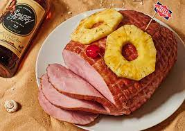

Rumham

Ingredients
- 1 dinner ham
- 3 parts your choice of spiced rum
- 1 part pineapple juice
- 1 part brown sugar
- Salt
- Water
- Pineapple slices and maraschino cherries
Steps
- Combine rim and pineapple juice in stockpot
- Add ham to pot
- Add enough water to cover the ham
- Let ham sit overnight (upto 24 hours)
- Oven should be preheated 45 minutes before serving
- Place stockpot with ham in oven at 200 degrees
- Let simmer till ham is warmed through
- Garnish with pineapple slices and cherry
- Serve, preferably on a life-raft floating out to sea
Return to main page